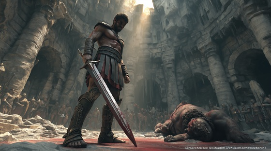

In the depths of the Labyrinth, Theseus struck the killing blow against the Minotaur — ending a generation of terror and sacrifice.
With nothing but mortal strength, cunning, and a sacred thread, he broke the curse that had haunted Athens and Crete alike.
"Blade Against Horn" captures the ferocity, heroism, and final triumph in a battle where survival was not just victory — it was legend.
Blade Against horn
Steel on horn, blood on breath
A scream of life, a howl of death
The labyrinth shakes, the silence dies—
The blade now drinks the monster's cries
No chains shall bind, no gods shall break—
This breath, this strike, this oath I stake
Blade against horn, fire against fate
I carve the gods their mortal gate
Bone shall shatter, blood shall roar—
The beast shall fall forevermore
The horns they tear, the claws they rend
But mortal fire does not bend
I drive the blade through beating core—
The storm is mine forevermore
No tyrant’s fear, no cursed decree—
Shall stay this hand, shall silence me
Blade against horn, fire against fate
I carve the gods their mortal gate
Bone shall shatter, blood shall roar—
The beast shall fall forevermore
With final cry, with final breath
The horn breaks stone, the blade strikes death
And through the dark, and through the flame—
The hero stands without a name
Blade to horn, soul to flame
I carve my fate through gods and shame
No throne, no beast, no blood, no sky—
Can turn the hand that dares to die
Blade against horn, fire against fate
I tear the heavens from their gate
The beast is slain, the maze undone—
The thread now leads me to the sun
Blade and horn, blood and sky—
The beast is dead, the hero flies